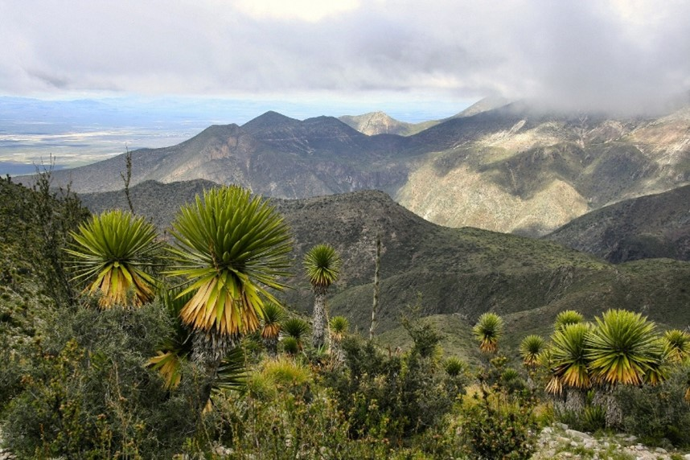
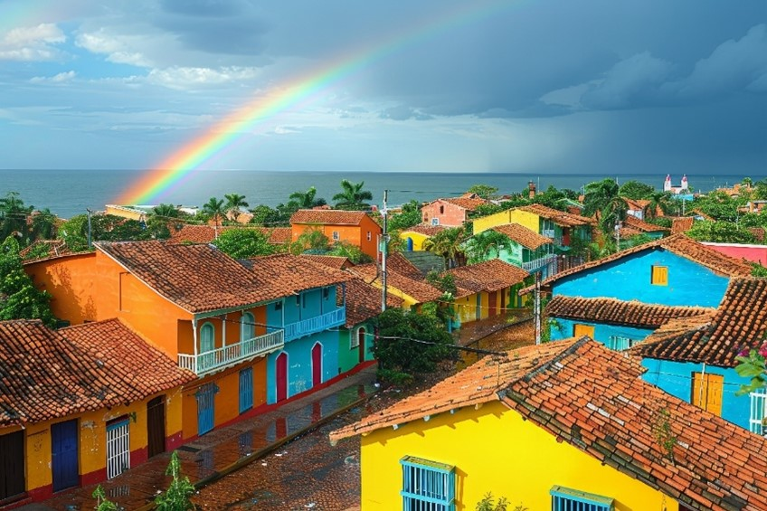
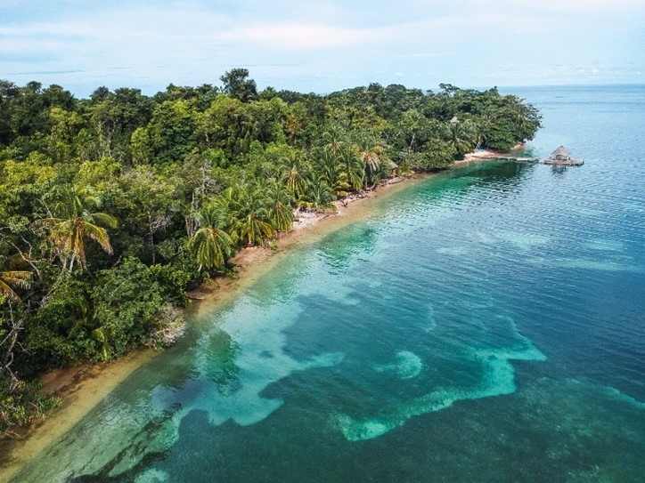
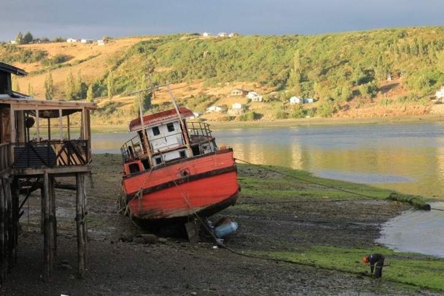
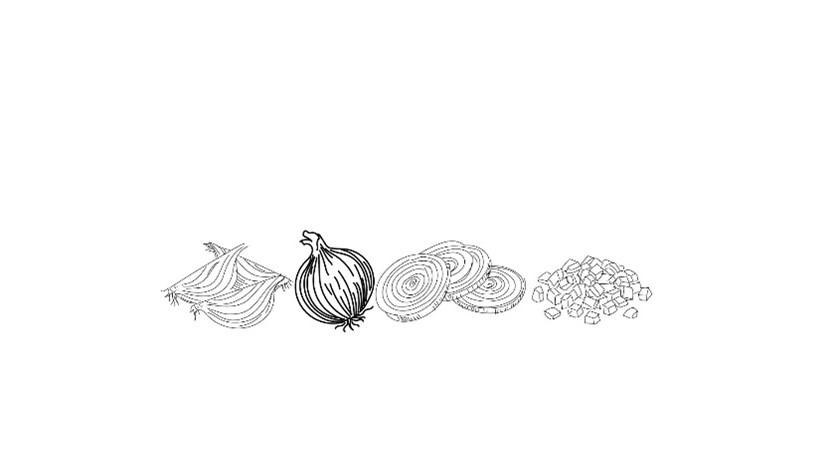
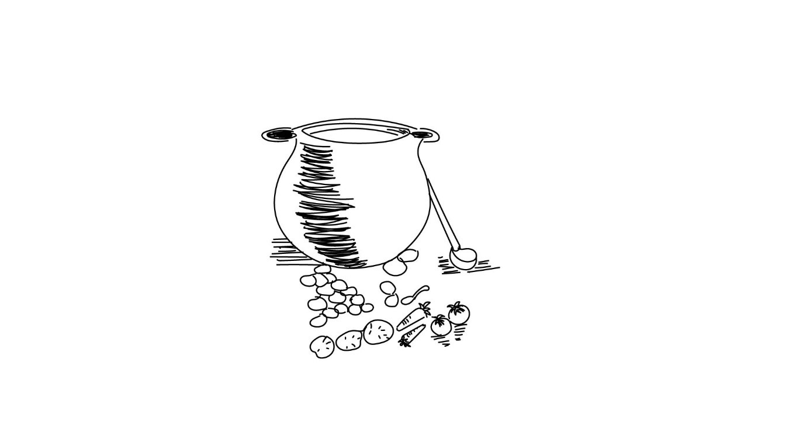

COLOMBIA A TRAVÉS DE SUS SABORES
Descubre la diversidad gastronómica de Colombia
COLOMBIA EN IMÁGENES


EXPLORA LAS REGIONES



RECETAS DESTACADAS
ARROZ CON CAMARONES
Plato tradicional de la región Caribe.

BANDEJA PAISA
Plato tradicional de la región Andina.

SANCOCHO SERRANO
Plato tradicional de la región Pacífica.